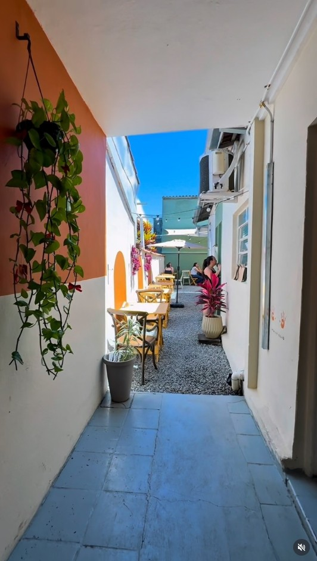
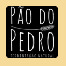
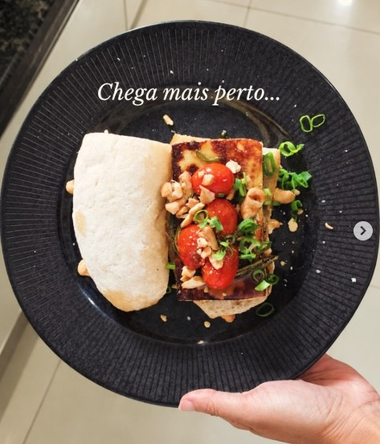
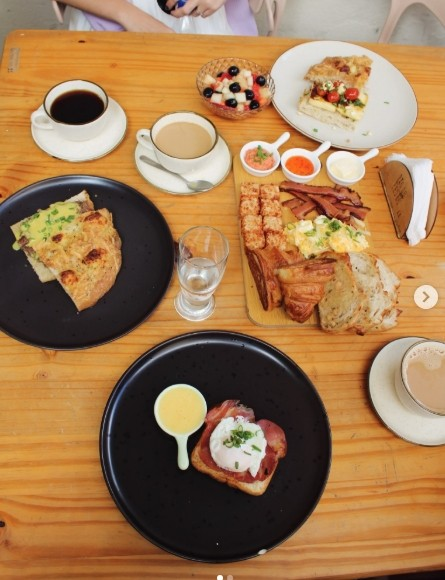
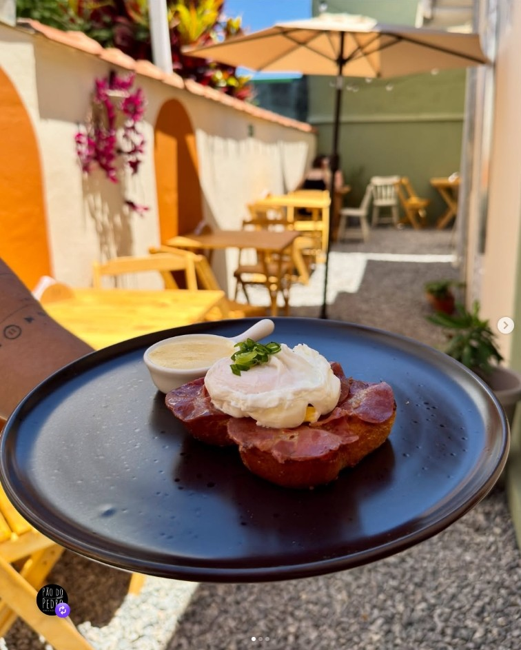
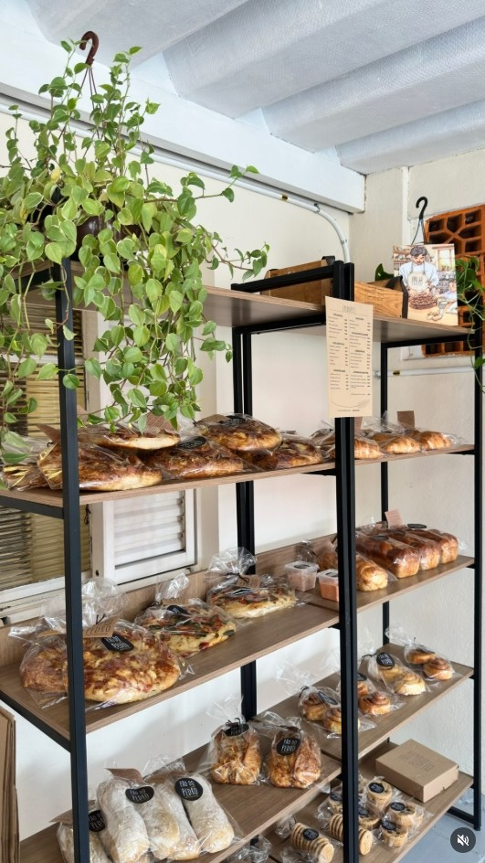
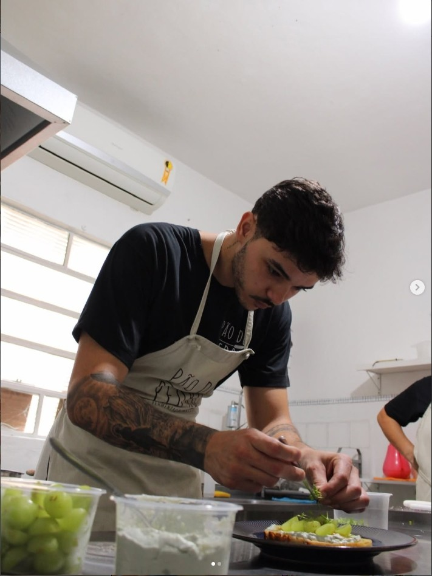
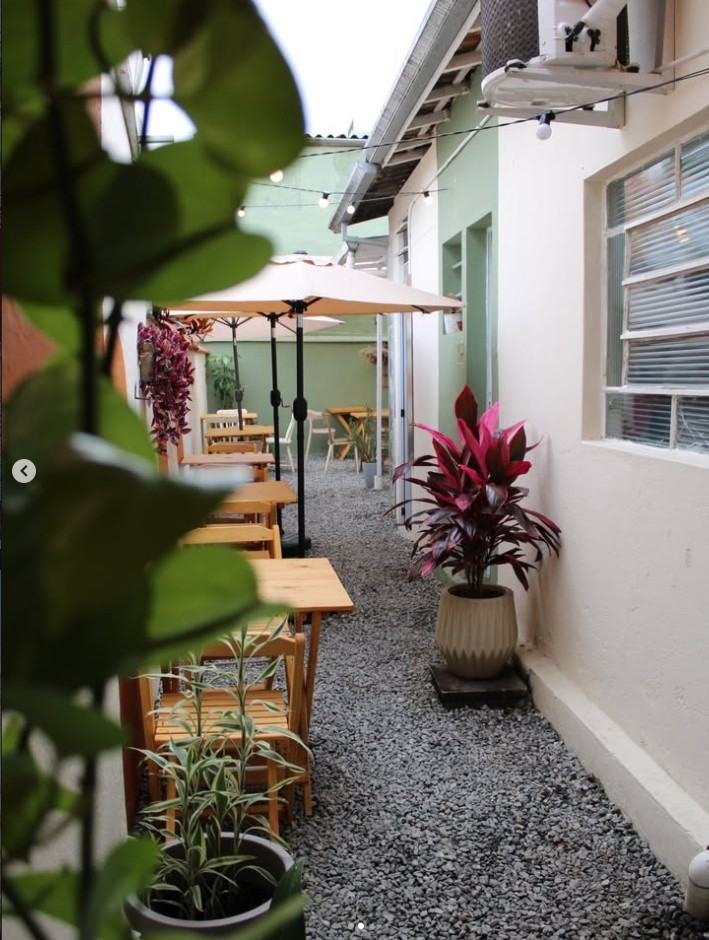
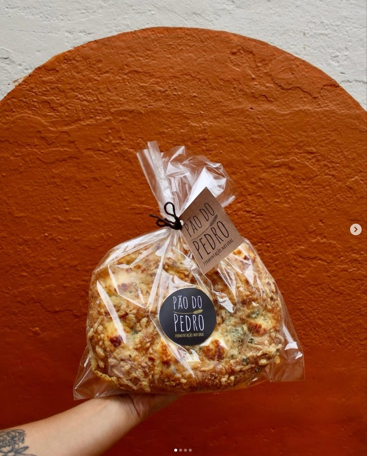

Fermentação natural · Jacareí

Padaria artesanal · Jacareí
Fermentação natural, café e uma casa que abre as portas para transformar espera em mesa.
Entre na história01 · A casa
A linguagem visual nasce do próprio lugar — dos arcos, da madeira, das plantas e da luz natural.
02 · Matéria
Alguns pães passam de 24 horas em fermentação natural. O resultado aparece na crosta, no miolo e no aroma.
03 · Mãos
O processo não fica escondido atrás do produto. É parte da experiência — do preparo à mesa.
04 · Pedro
Uma história que começou pequena e ganhou endereço, balcão, café e gente chegando para ficar.
05 · Café
Sábado e domingo, das 8h às 12h. Café, pão, brunch e tempo para sentar.
06 · Mesa
O pão deixa de ser produto e vira encontro — a última transformação da experiência.
A casa
Matéria
Mãos
Café
O ingrediente invisível
Os pães rústicos passam de 24 horas em fermentação natural; as focaccias do cardápio chegam a 28 horas. O relógio aqui não acelera o processo — ele faz parte da receita.




O Pedro
A história do Pão do Pedro começou em uma cozinha de apartamento de 55 m² e cresceu até ganhar uma casa própria em Jacareí — sem perder a escala humana que faz o nome ter sentido.
Hoje, produto, espaço e pessoa contam a mesma história: fazer perto, servir bem e deixar o tempo participar.


A casa
Durante a semana, encomendas. No fim de semana, portas abertas para café.
Vem comer com a gente
16h — 19h
Entrega ou retirada. Encomende até 12h do dia anterior.8h — 12h
Portas abertas. Venha tomar café.